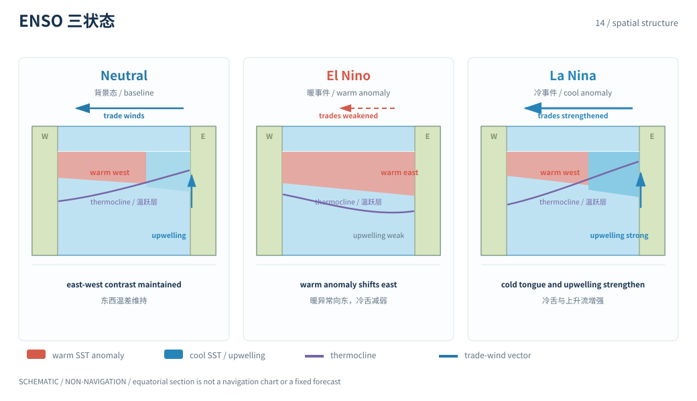
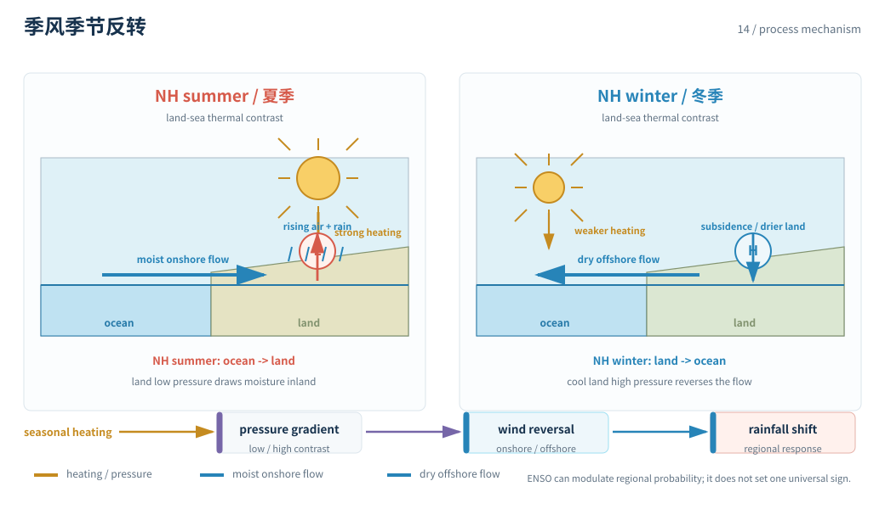

本页目录
耦合变率 · ENSO、季风与时滞反馈
ENSO 不是一张固定周期表，季风也不是海温的被动影子。热带海洋、大气环流、热含量和季节循环组成一个带记忆、受噪声扰动的耦合振荡系统。


学习层：先给热带海洋做一个双变量模型，再看 ENSO 如何投影到季风
1. 具体情境：季节预测员面对同一年的海温和降雨信号
季节预测员看到热带太平洋海温异常、温跃层热含量和某季风区降雨同时变化。他必须区分：哪些是海气反馈产生的内部变率，哪些是季节强迫，哪些只是区域遥相关的统计投影。这个情境是模型练习，不是把一次模拟轨迹当作未来预报。
2. 揭示前预测：记忆、阻尼与遥相关
先预测：
- 若把温跃层/热含量异常 \(H\) 设为“充电”变量，它更可能领先表层海温 \(T\)，还是在 \(T\) 之后才变化？
- 增大阻尼，会让振荡幅度变大还是变小？
- ENSO 对季风的响应符号是否对全球所有季风区都相同？
揭示后，拖动海气耦合、充放电强度、阻尼和季节强迫，查看 \(T\)、\(H\) 与一个明确标注为“区域投影代理”的季风指标时间序列。曲线服务于账本，不代替观测。
3. 公式桥：带记忆的最小耦合振子
用无量纲月步长的教学模型表示东太平洋海温异常 \(T\) 与热含量/温跃层变量 \(H\)：
\(aH\) 表示热含量释放对表层的反馈，\(-bT\) 表示异常事件后的“放电/再充电”方向，\(\lambda\) 与 \(r\) 是阻尼。忽略强迫时，线性系统的矩阵
的特征值决定衰减或振荡；若耦合足够强，复特征值带来一个近似周期，但这个周期不是 ENSO 的固定常数。
把季节循环与区域响应写成
只是一个符号已定义的遥相关代理。真实季风还受陆海热力差、地形、积雪、土壤湿度、海温分布和其他海盆影响；不同区域的 \(c_M\) 可以变号，不能把实验符号推广为普遍定律。
4. 互动实验：把海温、热含量和季风投影同时画出来
JavaScript 失效时的静态 fallback：默认差分模型使用海气耦合 \(a=0.20\)、充放电强度 \(b=0.08\)、海温阻尼 \(\lambda=0.025\)、热含量阻尼 \(r=0.02\)、季节强迫幅度 \(0.06\)、区域投影系数 \(c_M=0.35\)，模拟 96 个月。所有量为无量纲教学状态，不是 ENSO 指数或某年季风预报。
| 账本量 | 默认结果（确定性复算） | 单位 / 读法 |
|---|---|---|
| 模拟长度 | 96 | month，月步长 |
| 海温最大值 | 0.800000 | 无量纲 \(T\) |
| 海温最小值 | -0.770256 | 无量纲 \(T\) |
| 海温异常幅度 | 0.785128 | \((T_{\max}-T_{\min})/2\) |
| 季风投影范围 | 1.075002 | 无量纲 \(M\)，区域代理 |
| 海温过零次数 | 4 | 96 月序列的符号变化次数 |
| 周期代理 | 48 | month，\(2\times96/4\) |
| 状态 | 有时滞振荡 | 由确定性差分序列判定 |
| 证据类型 | 机制模型 | 不是观测、再分析或情景预言 |
先提交“\(H\) 领先 / 滞后”“阻尼增大幅度变大 / 变小”“季风符号统一 / 依区域而变”三项预测。揭示后至少调节耦合和阻尼，比较振荡的幅度、周期代理和区域投影。
5. 边界：振荡模型的漂亮周期不能冒充预测能力
- 两变量不是完整海气模型：真实 ENSO 包含风应力、对流、温跃层倾斜、海盆边界、季节锁相和随机天气噪声。
- 参数不是直接观测量：\(a,b,\lambda,r\) 是经过尺度化的有效系数，需要用多源观测、再分析和模型集合约束。
- 周期不是固定时钟：反馈、阻尼、噪声和背景态变化会改变峰间隔；单次模拟的峰值不能推出未来日期。
- 季风遥相关有区域符号：\(c_M\) 是明示的区域代理，不能用一个地方的正负号概括所有季风系统。
- 内部变率与外强迫要分开：年度、基准期、指数定义和核验日期必须随观测数字出现；场景输出要标场景假设，不写成已经发生的事实。
迁移问题：把 \(\lambda\) 增大一倍，为什么峰值会衰减而不一定把周期缩短一半？若要把模型迁移到另一个季风区，你会重新估计 \(c_M\)、加入地形项，还是直接沿用默认值？请说明哪一项需要区域观测验证。
1. ENSO 的变量语言
ENSO 的教育模型常用海表温度异常、温跃层深度/热含量、风应力和对流作为状态变量。把它们分开，有助于理解为什么一个海温峰值出现时，系统的“记忆”可能已经在更早的月份形成。
季节循环会调制反馈强度和可观测信号。它不意味着每年必有同样事件；外部强迫、随机天气和背景海温共同决定这一段轨迹是否被放大。
2. 季风是耦合响应
季风是季节性反转的区域环流系统，陆海热力差、地形和水汽输送构成其基本骨架。ENSO 可以通过 Walker 环流、对流和遥相关改变部分季风区的概率分布，但影响的符号、季节和强度依区域而变。
因此“ENSO 导致某地一定旱/涝”是过度简化。正确说法需要给出区域、季节、指数定义、基准期、样本长度和不确定性。
3. 数量级与证据
这里的时间单位是月，模拟窗口约十年以内；它不覆盖海洋热含量的全部慢记忆，也不代表古气候或长期趋势。观测 ENSO/季风指数通常需要明确基准时段、季节平均与数据版本；指标会随着数据更新而改变，核验日期不能省略。
IPCC AR6 WGI Atlas 与第 8 章的区域水循环评估可用于检查遥相关与降水不确定度；NOAA 的 ENSO 观测与预测资料可用于理解指数和业务预报的证据链。任何动态数字都应保留指标年、基准和核验日期。
实际研究还要做时间序列诊断：去除季节循环、选择基准期、处理缺测和自相关，再比较领先/滞后相关或谱峰。一个看似四年的峰间隔可能来自有限窗口、季节锁相或随机噪声，不足以单独证明存在稳定振子。
预测问题还要区分确定性轨迹与概率分布。初始状态的小误差会沿不稳定方向放大，集合成员的离散度因此是结果的一部分；本实验只展示一个透明的确定性成员，不给出业务概率。
指数还有统计定义的边界：海温异常要相对于一个明确基准期，季风降水要说明季节窗口和区域平均，不能把两个不同基准的异常直接相加。观测、再分析和模式成员也要保留证据类型。
在实际归因中，相关领先不自动等于因果。需要检验风应力、对流、温跃层和外部强迫是否构成一条可重复的物理路径，并用不同资料产品检查结论是否稳健。
预测验证也要和训练模型分离：用历史窗口拟合参数，再在未参与拟合的时间段检查相关、偏差、可靠度和极端事件命中率。单条模拟轨迹与观测峰值对齐，并不能证明模型具有预报能力。
迁移到区域季风时还要重新选择空间平均和基准期。一个区域平均降雨异常可能掩盖山地迎风坡与背风坡的相反变化；把局地站点和格点数据混合前，必须说明代表面积和采样权重。
这就是“可解释的简化模型”与“可验证的区域预测”之间必须补齐的证据链。
推荐阅读 IPCC AR6 WGI Atlas 与 NOAA ENSO。
到这里，冰、水、能量、风、云和海洋已经共享一套语言：储库、通量、反馈、时滞与证据边界。